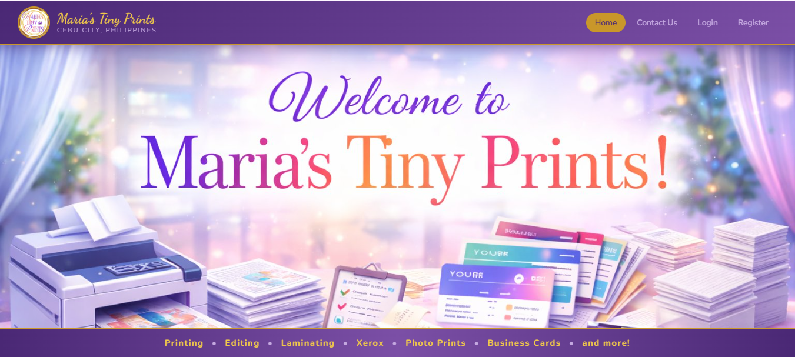

Maria's Tiny Prints Website
A printing services website for Maria's Tiny Prints, featuring a colorful homepage that showcases printing, photo printing, editing, laminating, and other services. This project helped me practice web development and website design.
My contribution: I worked on the website layout, HTML structure, CSS styling, and page design. I also used XAMPP to run the project locally and test the website.